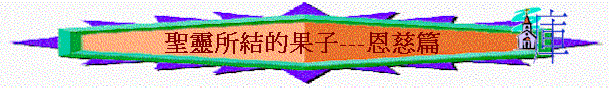

「愛是恆久忍耐，又有恩慈；愛是不嫉妒；愛是不自誇，不張狂」
林前13:4
一.恩慈的字義
「聖靈所結的果子，就是仁愛、喜樂、和平、忍耐、恩慈、良善、信實、」加5:22
∼恩慈原文‘chrestotes’有和善、仁慈，正直的意思
1.與嚴厲不同
「可見神的恩慈和嚴厲，向那跌倒的人是嚴厲的，向你是有恩慈的；只要你長久在他的恩慈裡，不然，你也要被砍下來。」羅11:22
2.與寬容有關
「還是你藐視他豐富的恩慈、寬容、忍耐，不曉得他的恩慈是領你悔改呢？」羅2:4
3.對人施慈愛
「但到了神我們救主的恩慈和他向人所施的慈愛顯明的時候，」多3:4
4.向人施恩典
「耶和華說：「我要顯我一切的恩慈，在你面前經過，宣告我的名。我要恩待誰就恩待誰；要憐憫誰就憐憫誰」；」出33:19
∼原本那人可能是不配，但仍向他施慈愛與恩典
二.真神的恩慈
1.何等大的
「他的恩慈何等大！他的榮美何其盛！五穀健壯少男；新酒培養處女。」亞9:17
2.是豐富的
「還是你藐視他豐富的恩慈、寬容、忍耐，不曉得他的恩慈是領你悔改呢？」羅2:4
3.令人悔改
4.可顯明的
「但到了神我們救主的恩慈和他向人所施的慈愛顯明的時候，」多3:4
三.施恩慈原因
1.因我們是蒙愛的
「所以，你們既是神的選民，聖潔蒙愛的人，就要存（原文作穿；下同）憐憫、恩慈、謙虛、溫柔、忍耐的心。」西3:12
2.表明是神的用人
「反倒在各樣的事上表明自己是神的用人，就如在許多的忍耐、患難、窮乏、困苦、」林後6:4
「廉潔、知識、恆忍、恩慈、聖靈的感化、無偽的愛心、」林後6:6
3.配作至高者兒子
「你們倒要愛仇敵，也要善待他們，並要借給人不指望償還，你們的賞賜就必大了，你們也必作至高者的兒子；因為他恩待那忘恩的和作惡的。」路6:35
4.所得賞賜是大的
「你們倒要愛仇敵，也要善待他們，並要借給人不指望償還，你們的賞賜就必大了，你們也必作至高者的兒子；因為他恩待那忘恩的和作惡的。」路6:35
四.恩慈的應用
「你們倒要愛仇敵，也要善待他們，並要借給人不指望償還，你們的賞賜就必大了，你們也必作至高者的兒子；因為他恩待那忘恩的和作惡的。」路6:35
「並要以恩慈相待，存憐憫的心，彼此饒恕，正如神在基督裡饒恕了你們一樣。」弗4:32
1.要愛仇敵
2.善待別人
3.滿有饒恕